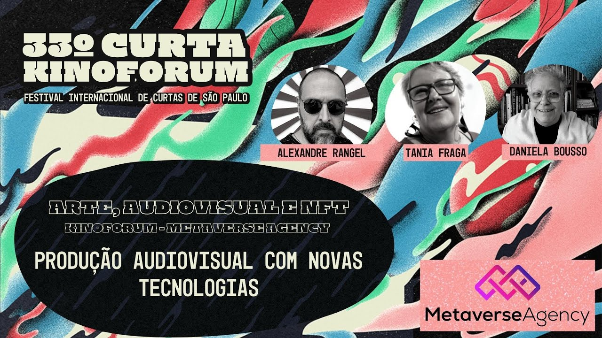
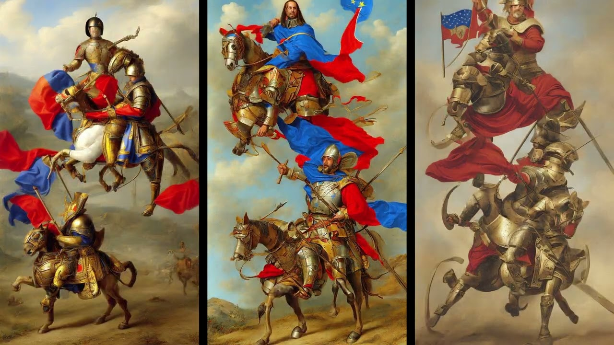
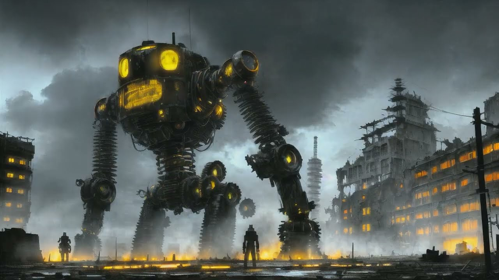

Arte com Inteligência Artificial
Art with Artificial Intelligence

Produção audiovisual com novas tecnologias - KINOFORUM
Audiovisual production with new technologies - KINOFORUM
Produção audiovisual com VR e Inteligência Artificial.Apresentador: André Fischer
Participantes: Dani Bousso, Tania Fraga e Alexandre Rangel.
kinoforum.org Audiovisual production with VR and Artificial Intelligence.
Host: André Fischer
Guests: Dani Bousso, Tania Fraga and Alexandre Rangel.
kinoforum.org

Pesadelo Colonial
Colonial Nightmare
Alexandre Rangel, 2024Alexandre Rangel, 2024
Tempos Tenebrosos
Turbulent Times
Alexandre Rangel, 2022Exposição PARADA 7: Arte em Resistência
Centro Cultural Justiça Federal /
Centro Municipal de Arte Hélio Oiticica
Alexandre Rangel, 2022
PARADA 7 exhibition: Art in Resistance
Federal Justice Cultural Center /
Hélio Oiticica Municipal Art Center
instagram.com/cma.heliooiticica

Cityscape as the hypothesis of quantization 1
Cityscape as the hypothesis of quantization 1
Alexandre Rangel, 2023Alexandre Rangel, 2023